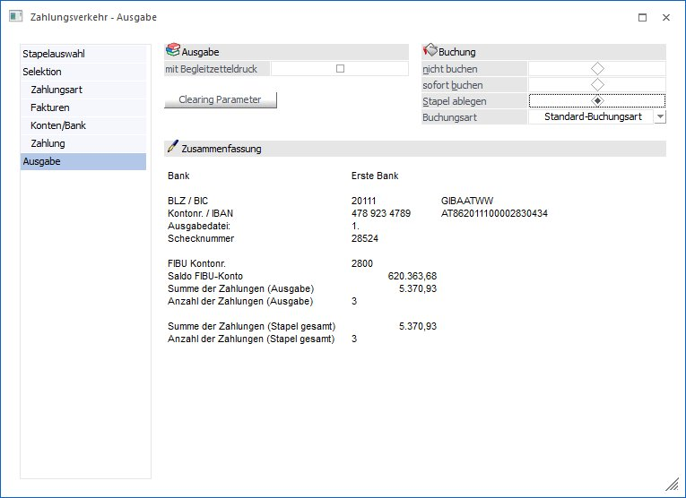
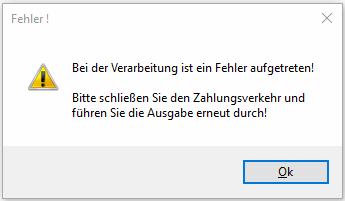
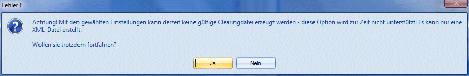
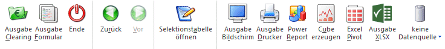
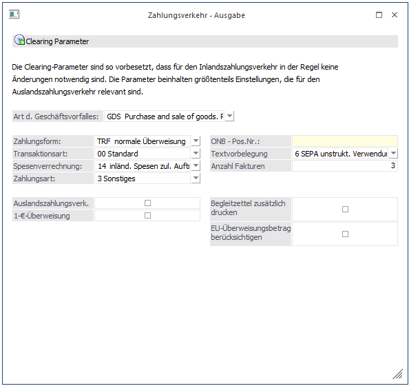

Ø Mit Begleitzetteldruck
Automatische Ausgabe eines Begleitzettels auf dem ersichtlich ist, welche Fakturen mit einer Zahlung ausgeglichen worden sind. Ist diese Option aktiviert, wird in der Clearingdatei KEINE Information mehr über die einzelnen gezahlten Fakturen mitgegeben (da ja ohnehin der Begleitzettel ausgegeben wurde). Dabei erscheint im Verwendungszweck der Text: Fakturen lt. Begleitzettel.
Achtung:
Die Begleitzettel werden standardmäßig in den Spooler gedruckt, auch wenn die Ausgabe auf Drucker aktiviert wurde.
Ist die Option NICHT aktiviert, wird KEIN Begleitzettel ausgegeben - dafür aber die Faktureninfo (welche Faktura, Zahlungsbetrag, Skontobetrag) als Begleittext im Clearingfile ausgegeben. Bei Zahlungen/Einzüge von mehr als 11 Fakturen je Konto wird automatisch ein Begleitzettel erstellt und im Clearingfile wiederum nur der Hinweistext "lt. Begleitzettel" ausgegeben.
Achtung:
Wurde zuvor die Option "Einzelüberweisung" selektiert, kann die Checkbox "mit Begleitzetteldruck" nicht aktiviert werden.
Hinweis
Die im Clearingfile enthaltene Information der Belegtextzeilen (12x53 Zeichen, wobei die erste Zeile die Headerinformation als Text beinhaltet) kann über das Formular P01W37CLEAR gesteuert werden (um z.B. auch den OP-Text mit auszugeben. Sollten Sie hier über die Standardausgabe hinausgehende Wünsche bezüglich der auszugebenden Informationen haben, wenden Sie sich bitte an Ihren mesonic-Betreuer.
Nur bei Ausgabe auf Formular oder Clearing werden Zahlungen durchgeführt.
Ø Buchung
ü nicht buchen
Es wird kein
Buchungssatz für die Zahlung erstellt.
ü sofort buchen
Die gezahlten
Rechnungen werden sofort OP-mäßig und FIBU-mäßig gebucht und ausgeglichen.
ü Stapel ablegen
Die
Buchungszeilen werden in einem Stapel abgelegt (aus der Bezeichnung des Stapels
ist ersichtlich, wann und welche Zahlungsart gewählt wurde - z.B. Überweisung v.
16.07.1999) und können anschließend (normalerweise nach Eintreffen und Kontrolle
des Bankauszuges) im Punkt "Zahlungsstapel buchen" übernommen werden. Die
durch den Zahlungslauf ausgeglichenen OPs werden im OP-Blatt durch den
Mahnzähler -2 gekennzeichnet (d.h. ausgeglichen, aber noch nicht bestätigt).
Erst nach Buchen des Zahlungsstapels wird das Mahnkennzeichen von "-2" auf "-1"
(ausgeziffert) gesetzt. Wird die Zahlungszeile im "Zahlungsstapel Buchen" im
Zahlungsstapel deaktiviert oder der ganze Zahlungsstapel gelöscht, werden die
Offenen Posten automatisch wieder auf die Mahnstufe zurückgesetzt, die sie vor
dem Zahlungslauf gehabt haben.
Diese Option sollte unbedingt verwendet
werden, wenn der Jahresabschluss bereits frühzeitig erfolgen soll, da der
Zahlungsverkehr nur im aktuellen Wirtschaftsjahr durchgeführt werden kann. Im
Menüpunkt "Zahlungsstapel buchen" ist es anschließend möglich durch die
Eingabe eines Buchungsdatums aus dem Vorjahr den Zahlungsstapel zu
verschieben.
ü Buchungsart
Aus der
Auswahllistbox kann eine Standard-Buchungsart ausgewählt werden. Die Buchungsart
ist von der Zahlungsstapelart abhängig. Als Buchungsarten stehen alle
Buchungsarten zur Verfügung, die dem Buchungsschlüssel laut Zahlungsstapelart
entsprechen, z.B.: für Überweisungen stehen alle Buchungsarten mit dem
Buchungsschlüssel KZ und für Lastschriften stehen alle Buchungsarten mit dem
Buchungsschlüssel DZ zur Verfügung, und für die der jeweilige Benutzer die
Berechtigung hat. Beim Erstellen der Buchungen wird aus der eingetragenen
Buchungsart, der hinterlegte Buchungskreis und Nummernkreis verwendet.
Hinweis
Mikrostapel stehen im Zahlungsverkehr als Buchungsart nicht zur Verfügung.
Hinweis
In den FIBU-Parametern gibt es unter "Buchen (erweitert)" die Einstellung "Zahlungsverkehr".
Ø Überweisungsnummer hochzählen
ü Pro Konto/Buchung
Die
Überweisungsnummer im Bankenstamm wird pro Buchung hochgezählt und als
Belegnummer und Sachkonten-OP-Referenznummer für die erzeugten Buchungen
verwendet.
ü Pro Zahlungsstapel
Für alle
Buchungen eines Stapels wird dieselbe Überweisungsnummer aus dem Bankenstamm als
Belegnummer und Sachkonten-OP-Referenznummer verwendet. Der
Sachkonten-OP-Referenznummer wird ein "Z-" vorangestellt.
Achtung
Bei der Ausgabe im letzten Schritt des Zahlungsverkehrs und auch bei der Ausgabe der Zahlungsübersicht wird unabhängig vom Ausgabetyp geprüft, ob in der Tabelle eine Fakturennummer mehr als 1x vorkommt. Ist dies der Fall, wird die Verarbeitung mit einer Fehlermeldung abgebrochen.

Beispiel für mehrmaliges Vorkommen einer Fakturennummer:
Bei mehreren Kreditoren ist im Personenkontenstamm / Register FIBU der gleiche Debitor als "Deb.-/Kred.-Konto" hinterlegt.
Im Zahlungsverkehr ist die Option "Gegenrechnungen" aktiviert.
Wird der Überweisungslauf für mehr als einen dieser Kreditoren durchgeführt, wird die Verarbeitung mit dieser Fehlermeldung abgebrochen.
Achtung
Mit den folgenden Einstellungen kann zurzeit noch keine gültige Clearingdatei erzeugt werden:
ü Verwendung einer italienischen Hausbank bei Überweisung/Scheck
ü Bei der Verwendung einer Hausbank welche nicht in Österreich, Deutschland, Schweiz, Liechtenstein, Italien oder Tschechien sitzt.

Hinweis
Die Erstellung einer SEPA-XML-Datei ist für Hausbanken mit einem anderen Ländercode als A oder D (muss ein Euro-Land sein) möglich.
Für die Erstellung der XML-Datei ist der folgende mesonic.ini - Eintrag zu hinterlegen:
[Clearing]
CreateForeignSepaFiles=1
ergänzt um den Eintrag des Ländercodes, in dessen Format die SEPA-Datei erzeugt wird.
CreateForeignSepaFilesCountryCode=A
oder
CreateForeignSepaFilesCountryCode=D
oder
CreateForeignSepaFilesCountryCode=I
Ist dieser zusätzliche Eintrag vorhanden, dann wird das Foreign-SEPA-File nach der gewählten Landesnorm (A=Austria, D=Deutschland und I=Italien) erzeugt.
Buttons

Ø Ausgabe Clearing
Mit dem Button 'Ausgabe Clearing' werden die Zahlungen durchgeführt - die Zahlungsdaten werden in eine Clearing-Datei ausgegeben.
Ø Ausgabe Formular
Mit dem Button 'Ausgabe Formular' werden die Überweisungen auf Überweisungsformularen ausgegeben.
Ø Ende
Über den Ende-Button wird der Zahlungsverkehr verlassen.
Ø Zurück
Über diesen Button gelangt man zurück in den Schritt "Selektion".
Ø Vor
Über diesen Button gelangt man in den nächsten Schritt.
Ø Selektionstabelle öffnen
Über diesen Button wird das separate Fenster "Zahlungsverkehr-Selektionstabelle" geöffnet.
Ø Ausgabe Bildschirm
Mit dem Button 'Ausgabe Bildschirm' werden die Zahlungen nicht durchgeführt, sondern vorerst nur die Zahlungsvorschlagsliste ausgegeben.
Ø Ausgabe Drucker
Mit dem Button 'Ausgabe Drucker' werden die Zahlungen nicht durchgeführt, sondern vorerst nur die Zahlungsvorschlagsliste ausgegeben.
Ø Power Report
Durch Drücken des Buttons "Power Report" wird die Auswertung auf Basis von Cube-Daten grafisch dargestellt. Die Ausgabe ist individuell anpassbar und erfolgt in der Form von "Widgets", die unterschiedlichste Darstellungen ermöglichen.
Ø Cube erzeugen
Mit dem Button 'Cube erzeugen' wird der Zahlungslauf bzw. die selektieren Zahlungen als Cube ausgegeben. Der Zahlungslauf wird, aber nicht durchgeführt.
Ø Excel Pivot
Durch Anwahl des Buttons "Excel Pivot" werden die selektierten Zahlungen in Form einer Pivot Ausgabe in Microsoft Excel (2007 oder höher) angezeigt. Der Zahlungslauf wird, aber nicht durchgeführt.
Ø Ausgabe XLSX
Mit Hilfe des Buttons "Ausgabe XLSX" wird die Auswertung mit den von Ihnen definierten Selektionen an Microsoft Excel übergeben. Der Zahlungslauf wird, aber nicht durchgeführt.
Ø Datenquelle
Mit Hilfe dieser Auswahl kann definiert werden, ob und wie eine Datenquelle (d.h. ein Snapshot oder eine MasterView) verwendet werden soll.
ü Keine Datenquelle
Bei Auswahl
von "keine Datenquelle" wird keine zuvor angelegte Datenquelle genutzt. D.h. die
Daten werden von der WinLine "live" ermittelt und in der gewünschten Form
ausgegeben.
Hinweis
Da die BI-Ausgabe (z.B. Cube oder Power Report) immer eine Datenquelle benötigt, wird im Hintergrund eine temporäre Datenquelle (Snapshot) gebildet.
ü Datenquelle
erstellen/aktualisieren
Die Daten werden zur Laufzeit ermittelt und an einen
zu definierenden Snapshot übergeben. Nach dem Füllen der Datenquelle wird die
gewünschte Ausgabevariante über die Datenquelle erzeugt. Dieser Vorgang kann mit
einer Zeitverzögerung verbunden sein, da die Daten zusätzlich gespeichert werden
müssen.
ü Datenquelle verwenden
Bei der
Verwendung eines Snapshots werden die Daten direkt aus der Datenquelle gelesen,
d.h. die für die Ausgabe benötigten Daten können ohne Verzögerung in der
gewünschten Variante ausgegeben werden.
Wird hingegen eine MasterView
gewählt, so werden die Daten für die Ausgabe "live" ermittelt, wobei diese so
aktuell sind wie die zugrunde liegenden Datenquellen.
Hinweis
Der Button "Datenquelle verwenden" wird nur angeboten, wenn für diesen Bereich (bezogen auf den aktuellen Benutzer / Mandanten) zumindest eine private oder öffentliche Datenquelle existiert. Des Weiteren stehen nur die Ausgabevarianten "Power Report", "Cube erzeugen", "Excel Pivot" und "Ausgabe XLSX" zur Verfügung.
Hinweis
Weitere Informationen zum Thema "Datenquellen" entnehmen Sie bitte dem Kapitel "Die Datenquelle".
Hinweis
Für Gegenverrechnungen werden die Vorzeichen aller Werte umgekehrt, um die Gesamtsummen korrekt zu erhalten.
Achtung
Wurde ein Stapel als "Scheckzahlung" oder "Sperrstapel" definiert, so steht der Button "Ausgabe Clearing" nicht zur Verfügung.
Wurde ein Stapel als "Auftraggeberhaftung" oder "Sperrstapel" definiert, so steht der Button "Ausgabe Formular" nicht zur Verfügung.
Clearing Parameter
Nach Drücken dieses Buttons können Sie die Einstellungen für SEPA-Überweisungen oder die Überweisung gemäß Auslandszahlungsverkehr einstellen:

Ø Art des Geschäftsvorfalles
(3-stellig, alphanumerisch) Hier kann selektiert werden, ob um welchen Geschäftsvorfall es sich dabei handelt. Z. B. Wareneinkauf, Zinszahlungen usw. Bei dieser Angabe handelt es sich um Aussagen für die Statistik. Es erfolgt hierfür auch keine Abprüfung durch die Bank. Standardmäßig schlägt das Programm GDS = Kauf bzw. Verkauf von Waren vor.
Gilt nur für Tschechien:
Für Tschechien stehen eigene Zahlungsarten für die Clearingausgabe zur Verfügung. Beachten Sie die richtige Vorbelegung im Feld neben der Art des Geschäftsvorfalles.
z. B. 110 Warenausfuhr, 120 Wareneinfuhr, usw.
Ø Zahlungsform
Auswahl der zu verwendenden Zahlungsform wie z.B. TRF - Normale Überweisung, UGI-Priority Payments usw.
Gilt nur für Deutschland:
Ist im Bankenstamm der V2-Standard aktiviert, stehen hier bei Überweisungen ins Ausland auch die Scheck-Zahlungsformen 20-23 ("Versandform freigestellt", "per Einschreiben", "per Eilboten" und "per Eilboten/Einschreiben") zur Verfügung.
Ø Art der Transaktionsart
In diesem Feld kann die Art der Transaktion festgelegt werden. Wenn z.B. in Österreich ein Bankeinzug durchgeführt wird, dann wird hier die Transaktionsart " 82 Einzug gemäß Einzugsermächtigungsverfahren", vorgeschlagen, bei einer Abbuchung wird die Transaktionsart " 83 Lastschrift auf Basis Abbuchungsauftrag" vorgeschlagen. Bei einer "normalen" Überweisung wird " 00 Standard" vorgeschlagen.
Ø Spesenverrechnung
Hier wird durch Auswahl der entsprechenden wer welchen Anteil an den Spesen, die durch diese Überweisung entstehen, zu tragen hat.
Hinweis
Wenn ein Auslandszahlungsverkehr durchgeführt wird, dann sollte hier die Option " 14 inländ. Spesen zul. Auftragg. Ausländ. Spes. Zul. Empf." Verwendet werden, womit dann die kostengünstigere Variante des AZV verwendet wird.
Ø Processing Indicator
Aus der Auswahllistbox kann gewählt werden, ob es sich bei der Zahlung um einen "Import", einen "Eigenübertrag", oder um eine "sonstige Zahlung" handelt.
Ø ONB-Positionsnummer
Dieses Feld kann für die Devisenstatistik verwendet werden.
Bezüglich genauerer Funktion der einzelnen Steuercodes kontaktieren Sie bitte Ihr Kreditinstitut bzw. Ihre Hausbank (hier handelt es sich um genormte Vorgaben, die mit den Anforderungen des Zahlungsverkehrs konform gehend, selektiert werden müssen).
Ø Textvorbelegung / SEPA Zahlungen
Bei SEPA-Zahlungen gibt es zwei Bereiche, in denen Zahlungsinformationen übermittelt werden können:
ü Strukturierter
Verwendungszweck
Der strukturierte Verwendungszweck entspricht in der WinLine
dem Kurzverwendungszweck (eigene Spalte im Register "Editieren" in der
Clearing-Ausgabe) und darf max. 35 Zeichen lang sein.
ü Unstrukturierter
Verwendungszweck
Der unstrukturierte Verwendungszweck entspricht in der
WinLine dem Langtext (einzelne Textzeilen im Register "Editieren" in der
Clearing-Ausgabe) und darf max. 140 Zeichen lang sein.
Hinweis
In der SEPA-Datei darf nur einer der beiden
Zahlungsinformationen mit übergeben werden. Sind in einer Zahlungszeile beide
Zahlungsinformationen bei der Clearing-Ausgabe befüllt, so hat der
Kurzverwendungszweck (strukturierter Verwendungstext) eine höhere Priorität und
wird dem Langtext vorgezogen. Somit geht der Langtext nicht in die
SEPA-Datei.
Die Prüfung, welcher Text in die SEPA-Datei geschrieben wird,
erfolgt je Zahlungszeile gesondert.
Hinweis für Deutschland
Üblicherweise wird mit dem unstrukturierten Verwendungszweck gearbeitet. Ggf. kontaktieren Sie Ihre Hausbank, in wie weit der strukturierte Verwendungszweck unterstützt wird.
Folgende Textvorbelegungen stehen für SEPA-Zahlungen in den Clearing-Parametern zur Verfügung:
ü 0 - Ausland
Ausgabe der
Überschriftenzeile. Pro Rechnung werden die Fakturennummer sowie der
Zahlungsbetrag ausgewiesen. In den Kurzverwendungszweck wird der OP-Text
übernommen.
ü 3 - 1-zeilig ohne Überschrift und
Anschrift
Pro Rechnung wird eine Zeile mit der Fakturennummer und dem
Zahlungsbetrag ausgegeben. In den Kurzverwendungszweck wird der OP-Text
übernommen.
ü 4 - Clearingausgabe Datum,
Faktura, und Betrag
Die Ausgabe erfolgt nach dem Schema Fakturendatum,
Fakturennummer und dem Zahlungsbetrag. In den Kurzverwendungszweck wird der
OP-Text übernommen.
Hinweis zu den Textvorbelegungen 0, 3 und 4
In der SEPA-Datei darf nur einer der beiden
Zahlungsinformationen mit übergeben werden. Sind in der WinLine einer
Zahlungszeile beide Zahlungsinformationen bei der Clearing-Ausgabe befüllt, so
hat der Kurzverwendungszweck (strukturierter Verwendungstext) eine höhere
Priorität und wird dem Langtext vorgezogen. Somit geht der Langtext nicht in die
SEPA-Datei.
Die Prüfung, welcher Text in die SEPA-Datei geschrieben wird,
erfolgt je Zahlungszeile gesondert.
ü 5 - SEPA 1 Zusatzfeld als
Kurzverwendungszweck strukt.
Im Kurzverwendungszweck wird das 1. Zusatzfeld
aus dem Personenkontenstamm geladen. In der SEPA-Datei entspricht dies dem
strukturierten Verwendungszweck. Diese Textvorbelegung sollte nur dann verwendet
werden, wenn im Zusatzfeld 1 des Personenkontenstamms die "Kontonummer beim
Lieferanten" hinterlegt ist.
Das Formular kann individuell angepasst werden
(P01W37CLEAR5INT).
Unter Flag V im Kopfbereich befindet sich die Variable
50/201 "Zusatzfeld 1".
ü 6 - SEPA unstrukt.
Verwendungszweck Faktnr./Betrag/Sko
Pro Rechnung wird im Langtext eine Zeile
mit Fakturennummer/Zahlungsbetrag/Skonto ausgegeben. In der SEPA-Datei
entspricht dies dem unstrukturierten Verwendungszweck. Bei dieser Variante kann
die Anzahl der Fakturen über das nachfolgende Feld "Anzahl Fakturen" gesteuert
werden. Als Standard-Wert ist hier 3 voreingestellt. Wie viele Fakturen von der
Stellenanzahl her in den Verwendungszweck übernommen werden können, hängt von
der Länge der Fakturennummer etc. ab und kann nur individuell entschieden
werden.
Das Formular kann individuell angepasst werden
(P01W37CLEAR6INT).
Unter Flag 2F (Deutschland) bzw. 1 (Österreich) im
Mittelteil befindet sich die Formel.
ü 7 - SEPA strukt.
Kurzverwendungszweck OPText
Im Kurzverwendungszweck wird der OP-Text
eingetragen. Der Langtext bleibt leer. In der SEPA-Datei entspricht dies dem
strukturierten Verwendungszweck.
Das Formular kann individuell angepasst
werden (P01W37CLEAR7INT).
Unter Flag V im Kopfbereich befindet sich die
Variable 19/18 "OP-Text".
ü 8 - SEPA Fremdkontonummer
unstrukt. Verwendungszweck
Die Fremdkontonummer aus dem Personenkontenstamm
wird in den Langtext eingetragen. Der Kurzverwendungszweck bleibt leer. In der
SEPA-Datei entspricht dies dem unstrukturierten Verwendungszweck.
Das
Formular kann individuell angepasst werden (P01W37CLEAR8INT).
Unter Flag 2F
(Deutschland) bzw. 1 (Österreich) im Mittelteil befindet sich die Variable
50/188 "Fremdkontonummer".
Ø Textvorbelegung / DTAUS
Bei einer "normalen" Inlandsüberweisung können Textzeilen mit angegeben werden, wobei die Anzahl der Textzeilen in A und D jeweils mit 12 beschränkt ist (pro Überweisung). Dazu kommt, dass in A pro Zeile 57 Zeichen, in D 27 Zeichen pro Textzeile verwendet werden dürfen.
Über die Textvorbelegung kann nun gesteuert werden, wie die Überschriften bzw. die Einzelzeilen bei Überweisungen gestaltet werden sollen, wobei es folgende Möglichkeiten gibt:
ü 0 Standard
Die Ausgabe erfolgt
nach folgendem Schema:
A: 1 Überschriftenzeile, pro Rechnung wird die
Fakturennummer, der Zahlungsbetrag und der Skontobetrag ausgewiesen - somit
können max. 11 Rechnungen mit einer Überweisung ausgeglichen werden.
D: 1
Anschriftenzeile, 1 Überschriftenzeile, pro Rechnung werden 2 Zeilen mit der
Fakturennummer, dem Zahlungsbetrag und dem Rechnungsbetrag ausgegeben - somit
können max. 5 Rechnungen mit einer Überweisung ausgeglichen werden.
ü 1 Ohne Überschrift und
Anschrift
Die Ausgabe erfolgt nach folgendem Schema:
A: pro Rechnung wird
die Fakturennummer, der Zahlungsbetrag und der Skontobetrag ausgewiesen - somit
können max. 12 Rechnungen mit einer Überweisung ausgeglichen werden.
D: pro
Rechnung werden 2 Zeilen mit der Fakturennummer, dem Zahlungsbetrag und dem
Rechnungsbetrag ausgegeben - somit können max. 6 Rechnungen mit einer
Überweisung ausgeglichen werden.
ü 2 1-Zeilig
Nur für D sinnvoll.
Die Ausgabe erfolgt nach folgendem Schema:
1 Anschriftenzeile, 1
Überschriftenzeile, pro Rechnung wird eine Zeile mit der Fakturennummer und dem
Zahlungsbetrag ausgegeben - somit können max. 10 Rechnungen mit einer
Überweisung ausgeglichen werden.
ü 3 1-Zeilig ohne Überschrift und
Anschrift
Nur für D sinnvoll. Die Ausgabe erfolgt nach folgendem
Schema:
Pro Rechnung wird eine Zeile mit der Fakturennummer und dem
Zahlungsbetrag ausgegeben - somit können max. 12 Rechnungen mit einer
Überweisung ausgeglichen werden.
ü 4 Mehrzeilig mit OP-Text pro
Faktura
Die Ausgabe erfolgt nach folgendem Schema:
A: 1
Überschriftenzeile, pro Rechnung wird die Fakturennummer, der Zahlungsbetrag und
der Skontobetrag ausgewiesen, in der 2. Zeile wird dann der OP-Text der Rechnung
mit übergeben - somit können max. 5 Rechnungen mit einer Überweisung
ausgeglichen werden.
D: 1 Anschriftenzeile, 1 Überschriftenzeile, pro
Rechnung wird eine Zeile mit der Fakturennummer und dem Zahlungsbetrag
ausgegeben, in der 2. Zeile wird dann der OP-Text der Rechnung mit übergeben -
somit können max. 5 Rechnungen mit einer Überweisung ausgeglichen werden
ü 5 Ohne Textinfos
Mit dieser
Option werden gar keine Textzeilen ausgegeben, es wird sofort der Begleitzettel
gedruckt.
ü 6 3 Fakturen in einer Zeile
Es
wird eine Überschriftenzeile erstellt, danach werden pro Zeile 3
Rechnungsnummern mit Strichpunkt (Semikolon) getrennt ausgegeben. Damit können
max. 33 Rechnungen pro Überweisung ausgeglichen werden.
Beim V2-Format wird
beim Erstellen der Datei das Semikolon durch ein Komma ersetzt.
Diese Optionen werden über die Formulare P01W37CLEAR1 bis P01W37CLEAR6 gesteuert, wobei die Anzahl der Optionen individuell noch erweitert werden kann.
Über die Optionen 7 und 8 kann gesteuert werden, welcher Text als Verwendungszweck im Clearing verwendet werden soll.
ü 7 Standard; Verwendungszweck = 1.
Zusatzfeld
Im Formular P01W37CLEAR7 (das der Ausgabe 0 = Standard entspricht)
kann mittels Flag "V" definiert werden, welcher Text in den Kurzverwendungszweck
gestellt wird. In der Auslieferversion ist in diesem Formular das Zusatzfeld 1
des Personenkontos hinterlegt. Diese Formulare können individuell angepasst
werden.
ü 8 1-Zeilig; kein
Verwendungszweck
Es wird das Formular P01W37CLEAR8 (das der Ausgabe 2 =
1-Zeilig entspricht) verwendet. Wird diese Textvorbelegung verwendet, wird kein
Verwendungszweck übergeben. Das Formular kann individuell angepasst
werden.
Wenn im Formular im Verwendungszweck einzig und alleine ein @ stehen,
dann bedeutet das, dass der Verwendungszweck leer bleibt.
ü 9 Standard; Verwendungszweck =
Fremdkontonummer
Es wird das Formular P01W37CLEAR9 (das der Ausgabe 0 =
Standard entspricht) verwendet. Bei dieser Textvorbelegung wird die
Fremdkontonummer aus dem Personenkontenstamm (Register "FAKT") als
Kurzverwendungszweck verwendet. Ist dieses Feld leer so wird der OP-Text
verwendet.
Hinweis
Für SEPA-Überweisungen gelten gewisse Texteinschränkungen beim Verwendungszweck. Bei der erstmaligen SEPA-Überweisung kommt im Zahlungsverkehr, wenn im Clearingparameter eine andere Textvorbelegung als "3" eingestellt ist, einmalig eine entsprechende Abfrage. Wird diese Abfrage mit JA beantwortet, wird automatisch die Textvorbelegung 3 im Clearingparameter eingetragen.
Ø Anzahl Fakturen
Damit kann vorgegeben werden, wie viele Fakturen in die SEPA-Datei übergeben werden sollen, wenn die Textvorbelegung "6 SEPA unstrukt. Verwendungszweck Faktnr./Betrag/Skonto" verwendet wird. Dieses Feld ist mit Anzahl 3 voreingestellt. Wie viele Fakturen von der Stellenanzahl her in den Verwendungszweck übernommen werden können, hängt von der Länge der Fakturennummer etc. ab und kann nur individuell entschieden werden.
Ø Auslandszahlungsverkehr
Wenn die Checkbox aktiviert wird, bedeutet das, dass max. 4 Textzeilen ausgegeben werden (in D ist das nur eine Überweisung, in A können damit 3 Überweisungen erstellt werden
Ø 1-€-Überweisung
Wenn die Checkbox "1-€-Überweisung" aktiviert wird, dann werden keine Begleitzettel mehr gedruckt (wenn nicht die Checkbox extra aktiviert ist). Das bedeutet, dass so lange Überweisungen erzeugt werden, bis für alle ausgeglichenen Rechnungen eine Textzeile in den Überweisungen vorhanden ist.
Beispiel
Textvorbelegung: Standard -> bedeutet in Österreich werden 11 Fakturen pro Überweisung übergeben.
Es werden nun einem Lieferanten 25 Fakturen bezahlt, wobei jede Faktura genau 10 € beträgt. Somit ergibt sich ein Gesamtbetrag von € 250,-. Mit der 1-€- Überweisung sieht das ganze wie folgt aus:
Überweisung 1, Betrag 1 €,--
Faktura Betrag
1 10,-
2 10,-
3 10,-
4 10,-
5 10,-
6 10,-
7 10,-
8 10,-
9 10,-
10 10,-
11 10.-
Überweisung 2, Betrag 1 €,--
Faktura Betrag
12 10,-
13 10,-
14 10,-
15 10,-
16 10,-
17 10,-
18 10,-
19 10,-
20 10,-
21 10,-
22 10,-
Überweisung 3, Betrag 248 €,--
Faktura Betrag
23 10,-
24 10,-
25 10,-
Ø Begleitzettel zusätzlich drucken
Wenn diese Option aktiviert ist, werden die Begleitzettel zusätzlich ausgedruckt. Auch für die Überweisungen, wo aufgrund der Anzahl der Überweisungen kein Begleitzettel notwendig ist.
Ø EU-Überweisungsbetrag berücksichtigen
Wird diese Option aktiviert, dann werden Überweisungen nur bis zum EU-Überweisungsbetrag (lt. Einstellung in den "Absender Stammdaten - Clearing-Absender") ausgegeben. Beträge die diesen Betrag übersteigen, werden auf mehrere Überweisungen gesplittet.
Zum Auslandszahlungsverkehr sind weiters noch die Punkte "Bankleitzahlenstamm (WinLine START)" und "Bankenstamm" sowie der "Clearing-Absender" zu beachten.
Formulare
Nachfolgend finden Sie eine Zusammenfassung, wie die Formulare im WinLine Zahlungsverkehr benannt werden:
Begleitzettel
P01W371
P01W3711: Begleitzettel für den Zahlstapel 1
Formulardruck
Der Name des Standard-Überweisungsformulars lautet:
P01WZ0A00: (P01WZ = fix, 0 = Spracheinstellung, A = Österreich - Ländereinstellung, 00 = Standard Überweisung)
P01WZ0D00: (P01WZ = fix, 0 = Spracheinstellung, D = Deutschland - Ländereinstellung, 00 = Standard Überweisung)
Der Name des Standard-Scheckformulars lautet
P01WZ0A10: (P01WZ = fix, 0 = Spracheinstellung, A = Österreich -Ländereinstellung, 10 = Standard Scheck)
P01WZ0D10: (P01WZ = fix, 0 = Spracheinstellung, D = Deutschland - Ländereinstellung, 10 = Standard Scheck)
Der Name des Standard-Bankeinzugsformulars lautet
P01WZ0A20: (P01WZ = fix, 0 = Spracheinstellung, A = Österreich - Ländereinstellung, 20 = Standard Bankeinzug)
P01WZ0D20: (P01WZ = fix, 0 = Spracheinstellung, D = Deutschland - Ländereinstellung, 20 = Standard Bankeinzug)
Der Name des Standard-Abbuchungsformulars lautet
P01WZ0A30: P01WZ = fix, 0 = Spracheinstellung, A = Österreich - Ländereinstellung, 30 = Standard Abbuchung)
P01WZ0D30: (P01WZ = fix, 0 = Spracheinstellung, D = Deutschland - Ländereinstellung, 30 = Standard Abbuchung)
Nun kann für jeden Zahlungsstapel ein eigenes Überweisungs- / Scheck- / Bankeinzug- / Abbuchungsformular hinterlegt werden. Dies ist vor allem für den Auslandszahlungsverkehr sinnvoll (für jede FW einen eigenen Stapel - da die Formulare zwischen Inlandszahlungsverkehr und Auslandszahlungsverkehr sich in der Regel unterscheiden werden).
Folgende Anpassung des Formularnamens wird aufgrund der Stapelnummer vorgenommen - dabei kann (wenn gewünscht) pro Stapel ein eigenes Formular hinterlegt werden
z.B.: Der Formular-Name für Stapel 1 lautet:
P01WZ0AS1: (P01WZ = fix, 0 = Spracheinstellung, A = Österreich - Ländereinstellung, S1 = Stapel 1)
P01WZ0DS1: (P01WZ = fix, 0 = Spracheinstellung, D = Deutschland - Ländereinstellung, S1 = Stapel 1)
Ob es sich bei dem Formular um eine Überweisung, einen Scheck, einen Bankeinzug oder eine Abbuchung handelt wird in der Stapeldefinition selbst festgelegt.